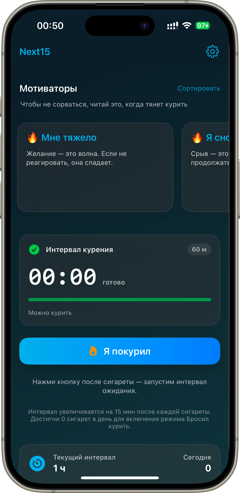

Что я сделал за полгода
Полный цикл в одиночку: идея → дизайн → разработка с AI-инструментами → релиз → маркетинг.
Owncome
Команда разработки из пяти ИИ-агентов.
Они работают ночью — утром я принимаю работу.
Пять агентов с ролями — продукт, техлид, фронтендер, бэкендер и оркестратор — работают как настоящая команда: сами разбирают задачи, спорят между собой, пишут код, проверяют работу друг друга и сдают её на приёмку. Ночью, пока я сплю. Утром я смотрю результат и говорю «принято» или «переделать».
Самым сложным было не заставить ИИ писать код — это сегодня умеет каждый. Самым сложным было сделать так, чтобы агент не мог объявить работу сделанной, пока она не сделана. У команды есть свои правила приёмки: сказать «я всё сверил с макетом» недостаточно — нужно приложить доказательство, и система сама проверяет, действительно ли агент смотрел, а не просто отчитался. Если проверка прошла вслепую, она честно говорит «я этого не видел» вместо «всё в порядке».
За четыре недели такая команда выдала 355 принятых задач и 743 коммита — объём небольшой команды живых разработчиков. Мои затраты — время на приёмку по утрам.
Next15
iOS-приложение для постепенного отказа от курения.
От идеи до App Store — за 4 вечера. Локализация на 12 языков.



MarkTabs
macOS-редактор Markdown с вкладками. Дистрибуция DMG через лендинг.
NickMate
Закрытая бета AI-коуч, life-OS. Помогает держать баланс во всех сферах жизни и чувствовать себя хорошо.Сначала он раскладывал день формально: 12 задач в слоты, встречи поверх, MIT после 17:00. Я не переписывал промпт — я показывал, почему правлю: «эту задачу нельзя ставить перед созвоном», «это не deep, это admin», «здоровье третий день пустое».
Из этих правок выросли его линзы: фильтр обещаний, фильтр оценщика, вес сфер, реалистичность слотов. Через два месяца доля дней, где я не трогаю план, дошла до 70% — дальше мы не гнались: последние 30% я хочу видеть сам, иначе перестану замечать, куда уезжает неделя.
Коуч живёт в Claude Cowork: inline-виджеты внутри диалога — план дня, графики обзоров, чек-листы ритуалов; sidebar-виджеты — контекст сфер, ожидания и хвосты всегда на виду.
Ритуалы он запускает сам: утреннее планирование, вечерний разбор, недельный и месячный обзоры.
Тренажёр ЕГЭ по русскому
iOS. Режимы «реальный экзамен» и «тренировка»,
отработка ошибок на основе персональной статистики.
Nickmeet
macOS. Распознавание речи в реальном времени
и подсказки ассистента по ходу диалога.
Смотрит в рабочий календарь и за три минуты до встречи звонит как обычный входящий: одним нажатием открывает ссылку и включает запись. По ходу разговора расшифровывает речь и подсказывает, что уточнить и где собеседник уходит от ответа. После — разбор на страницу: решения, обещания, сроки. Запись и расшифровка не уходят в чужие сервисы.
Nickmail
Почту читает не человек, а агент.
macOS, Windows, Linux.
Вместо списка из четырёх тысяч писем показывает три, где вас правда ждут, и пересказывает каждое человеческими словами: кто, чего хочет, к какому сроку и что будет, если промолчать. Завал разбирает пачками по отправителю. Черновики готовит сам — но отправляет письма только человек: это запрет на уровне кода, а не галочка в настройках.
TRENDSCOPE — исследование рынка, стратегия и роадмап
AI-инструмент, который проводит через девять фаз: собирает данные о рынке и конкурентах, проверяет стратегию на ответные ходы и собирает дорожную карту.
Всё, что нужно от человека, — ответить на девять вопросов о своём бизнесе.
Тренды, конкуренты, цены и незанятые ниши инструмент находит сам, а не берёт из памяти модели.
Между фазами выводы можно оспорить и переписать. Стратегия собирается вместе, а не выдаётся готовой.
Документ из десяти разделов — его можно отдать команде, инвестору или положить в основу роадмапа.
Когда пригодится: выходите на новый рынок · появился сильный конкурент · стратегия писалась год назад и устарела · нужно объяснить команде или инвестору, почему делаем именно это.
При повторном прогоне добавляется одиннадцатый раздел — что изменилось с прошлой версии, какие риски сбылись, где прежние выводы не подтвердились.
AI-маркетолог для Яндекс.Директа
Сквозной пайплайн: от брифа до открутки.
Анализ лендинга и конкурентов → подбор стратегии → сбор и кластеризация семантики → создание и загрузка кампании → управление и оптимизация.
Собственные MCP-коннекторы
Дизайн-системы и стандартизация AI-вывода
Двадцать лет продуктового трека
Внутренний продукт автоматизации управления рекламными кампаниями: дискавери и CustDev → архитектура → роадмап → вывод в самостоятельный сервис. Проектирование движения данных между системами: единая статусная модель, интеграции первой волны. Продуктовые процессы на AI-инструментах.
Генерация креативов для маркетинговых коммуникаций, команда ~8. Спроектировал систему AI-агентов для производства и оптимизации креативов; перенёс продукт во внутренний контур, преодолев технические и регуляторные ограничения. 30+ глубинных интервью и 2 опроса (200+). Решением пользуются 50+ сотрудников территориальных банков.
Вывел продукт в прод за 6 месяцев под жёсткие договорные требования: 100% соответствие ТЗ и дедлайнам. Через записи сессий нашёл и устранил точки трения. 15+ интервью — сместил фокус с «сделать по ТЗ» на «решить проблему».
Соцсеть профессионального нетворкинга. Стратегия, сегментация ЦА, MVP → первые активные сообщества. Процесс валидации гипотез: CustDev + A/B. −20% операционных расходов.
Платформа автоматизации интернет-рекламы, кросс-функциональная команда до 12 человек. +20 п.п. конверсии в регистрацию. Конвейер проверки гипотез Acquisition / Activation / Retention: −30% стоимости тестирования. Своя платформа A/B-тестов. Вывод на Казахстан и Бразилию: 500+ клиентов. +15% ARPU. 97% бюджетов переведено на автостратегии.
Запуск «Достаевский» в Москве: +25% клиентской базы за 6 месяцев. Uptime сайтов и CRM 99.8%, реакция ≤30 мин. CRM для сети салонов: −40% рутинных операций.
Умные share-кнопки для сайтов: 500+ клиентов, 700K загрузок в сутки, CTR рекламного места 3%, +20% конверсии.
Соцсеть для читателей: раунд $1M, 10K MAU за 3 месяца.
Развитие автопортала: выручка ×2.
Molinos.Ru — специалист по рекламе; IT-Group — продажи сайтов и SEO.
Международный институт экономики и права — менеджмент, 2011. Петровский колледж, 2005.
Курсы: GoPractice, Customer Development (Иван Замесин), UX Марафон, Google Ads & Analytics, Яндекс Директ.
Русский — родной.
Английский — B2.
Четыре уровня работы с моделью
AI-трансформации проваливаются не потому что ИИ слаб, а потому что его неправильно готовят и не дают контекста.